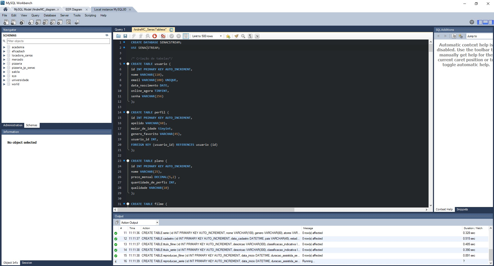
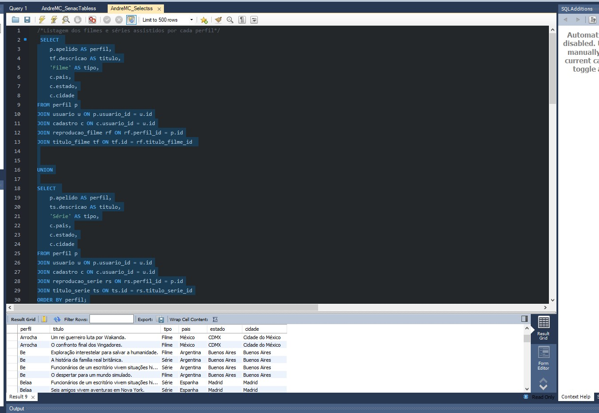

<div class="card shadow-sm">
    <div class="card-body">
        <div class="container-fluid">
            <div class="row">
                <div class="col-12 col-md-6">

                    <h1 class="text-black">Portfólio</h1>
                    <div class="card-text">
                        <p>
                            Já que eu comecei faz pouco tempo na programação eu tenho poucos projetos, mas vou mostrar
                            um que eu fiquei satisfeito.
                            <br> <br> <br>
                        <h3 class="text-black">Banco de dados de um Streaming fictício</h3>

                        <p>
                            Esse foi um projeto do curso do Senac pedido pelo professor Israel onde os alunos deveriam
                            fazer uma modelagem completa de um banco de dados de um streaming. Onde devia ter a
                            modelagem, a criação
                            de tabelas (DDL), inserção de dados (DML), as consultas (DQL) e alguns outros detalhes como
                            index e triggers.

                        </p>
                        </p>
                        
                        
                        


                    </div>
                </div>
                <div class="col-12 col-md-6">
                    <h4 class="text-black">Baixar Arquivo do projeto</h4>
                    <a href="AndreMC_diagramaSenacStream.zip" download class="botao-download">⬇️ Baixar Arquivo ZIP</a>
                </div>
            </div>


        </div>
    </div>
</div>